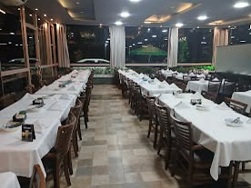
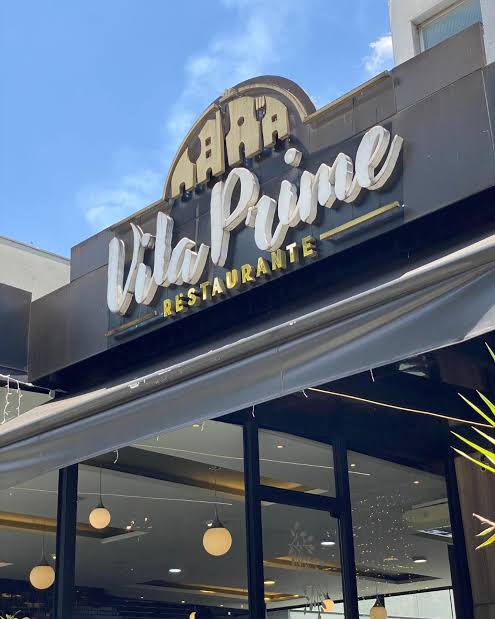
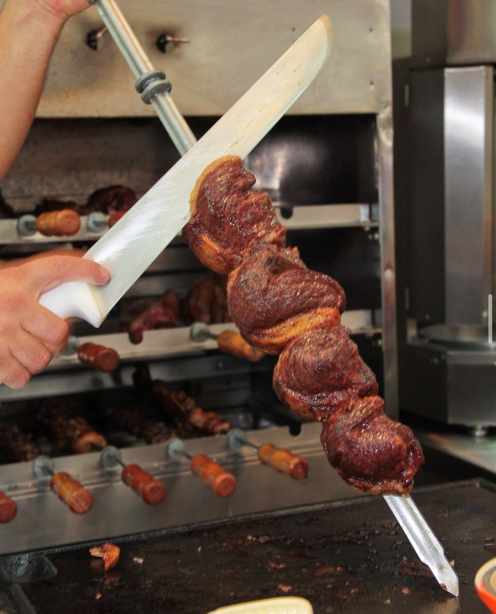
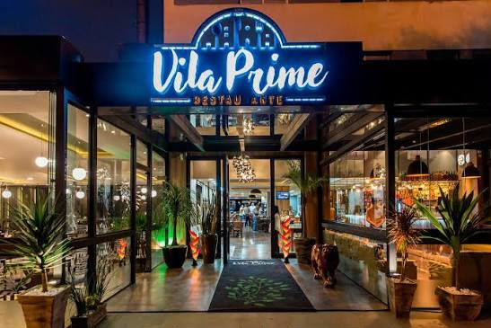
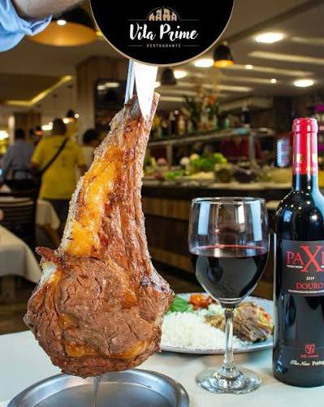

Fraldário e cadeirões
Mais conforto para quem vem acompanhado de crianças pequenas.
Churrasco servido na hora, buffet completo e rodízio de carnes, comida japonesa e pizzas para reunir família e amigos na Zona Norte de São Paulo.
Av. Braz Leme, 1770 · Casa Verde
Veja as opções, os valores informados e os horários.
Fraldário, cadeirões e menu infantil ajudam a deixar a visita mais confortável.

Mais conforto para quem vem acompanhado de crianças pequenas.
Opções para incluir os pequenos na refeição em família.
✧ Gerenciado por mulheres, o Vila Prime recebe famílias e grupos com um jeito casual, próximo e acolhedor.
Fachada, salão e churrasco servido na hora.




Valet, estacionamento próprio pago, acessibilidade e espaço para grupos na Casa Verde.
Informe a data, o número de pessoas e sua preferência de horário. A equipe confirma a disponibilidade pelo WhatsApp.
O horário é uma preferência e a solicitação não confirma a reserva. Aguarde a resposta da equipe antes de considerar a mesa confirmada.
Consulte os horários e fale com a equipe para planejar sua visita.
Almoço e jantar para aproveitar cada momento.
Chame a família e venha ao Vila Prime, na Avenida Braz Leme.
Reservar mesa